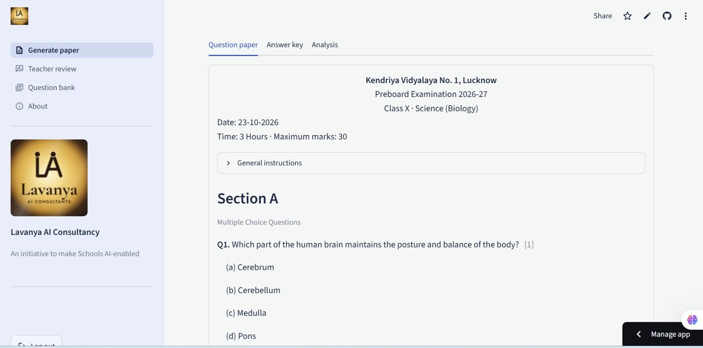
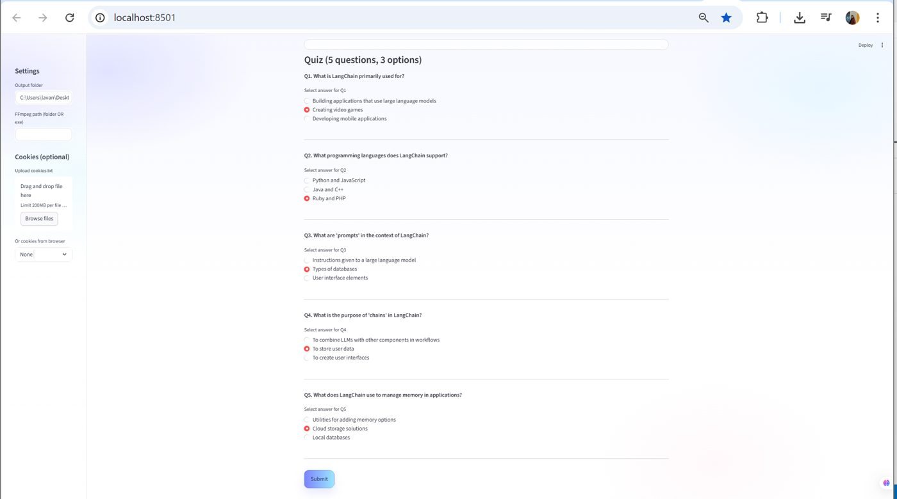
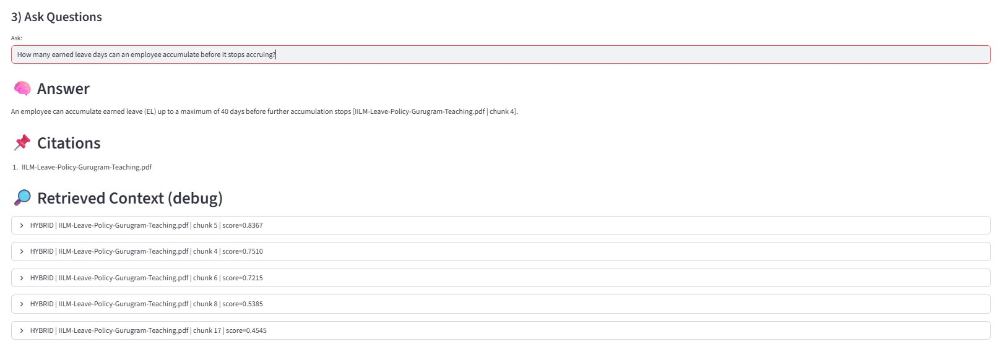

AI for Educators
- For
- Teachers and faculty
- Format
- Hands-on sessions, online or on campus
- Leave with
- A reviewed lesson resource, an assessment draft and a verification checklist
Practical AI learning for education · AI bots for business
Understand the concepts. Apply them to real tasks. Build work you can explain and share.

Choose your path
Help teachers start with AI safely, with every classroom resource and assessment reviewed by a teacher.
See school programmes I lead a collegeStudent capability, faculty development and curriculum support, shaped to each department.
See higher education I am an educatorLearn AI through tasks you already do: lesson resources, question papers, rubrics and research.
See educator programmes I run a businessReady-made bots for customer support, document Q&A and office tasks, set up on your data with a person approving what matters.
See the botsLooking for something students can show? Student AI Projects & Portfolios takes nontechnical learners from first concepts to a documented project on GitHub.
How learning works here
Every programme follows the same four steps, so learners leave with work they can explain, not just notes.
Plain language and everyday examples. What AI can do, and where it fails.
Tasks from the learner's own subject: HR, finance, science, history or management.
A guided output or mini-project, checked against clear criteria.
Documentation, a GitHub page and a short explanation of decisions and limits.
Programmes
Duration and scope are customised to each institution's needs.
See real work
Lavanya builds the kind of AI tools she teaches about. Three examples from the Applied AI Lab:

Problem: setting a board-pattern paper takes hours.
What it does: AI drafts questions and answer keys; the teacher approves every question before it can appear in a paper.
View case study
Problem: long lecture videos are hard to revise from.
What it does: transcribes a video, summarises it and builds a quiz to check understanding.
View case study
Problem: staff can't find the rule they need in long policy PDFs.
What it does: answers only from your documents and cites the source passage.
View case studyTeaching evidence
Every task is recorded in the same three parts, so institutions can see the learning, not just the attendance. Here is the format with a typical HR task.
| Part | Typical HR task |
|---|---|
| Task given | Use AI to draft a job description, then check it for biased language and missing requirements. |
| Learner output | A revised description with a short note on what AI got wrong and how it was fixed. |
| Guidance given | A review checklist, and how to document the before-and-after on GitHub. |
Meet Lavanya
Lavanya Srivastava began as a scientist, a gold medallist in conservation sciences and a research assistant at IISc Bangalore. She then spent nearly two decades teaching Science and Mathematics in schools, and Statistics and Research Methodology at college and university level.
Moving into AI meant becoming a learner again: learning to code, building applications and debugging systems. Today she builds AI tools and teaches nontechnical learners to understand and use them. She knows the climb, because she made it herself.
No. Programmes for educators and nontechnical students start from plain language. Coding appears only where a project needs it, with guided steps.
Yes. Examples and tasks are drawn from the participants' own discipline, for example HR, finance, aviation, logistics, science or management.
Yes. Faculty development and student programmes have different goals and are planned separately, though they can run in the same term.
Both are possible. We agree the mode, schedule and technical requirements in the proposal.
Choosing a clear problem, guided building, review against criteria, documentation on GitHub, and practice presenting the work.
A short note is enough. We reply within two working days.
Discuss your requirement